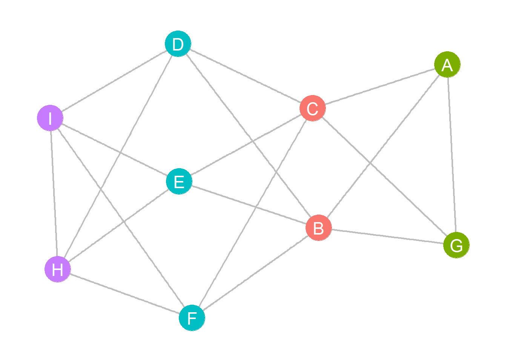
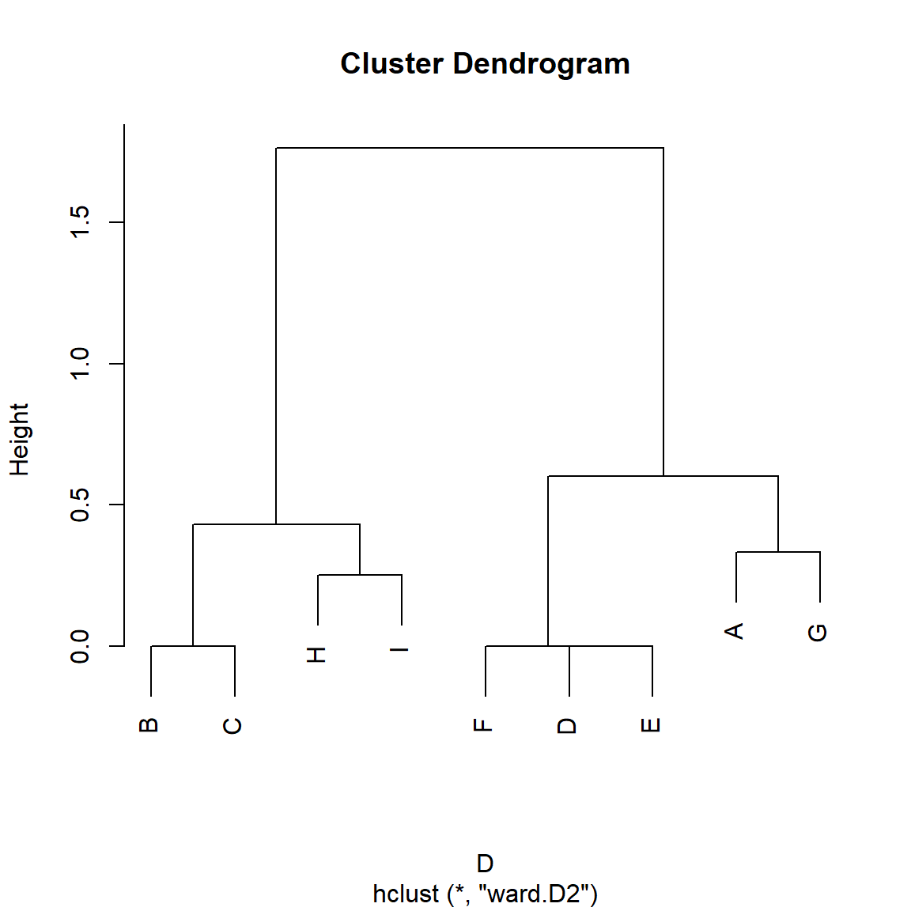
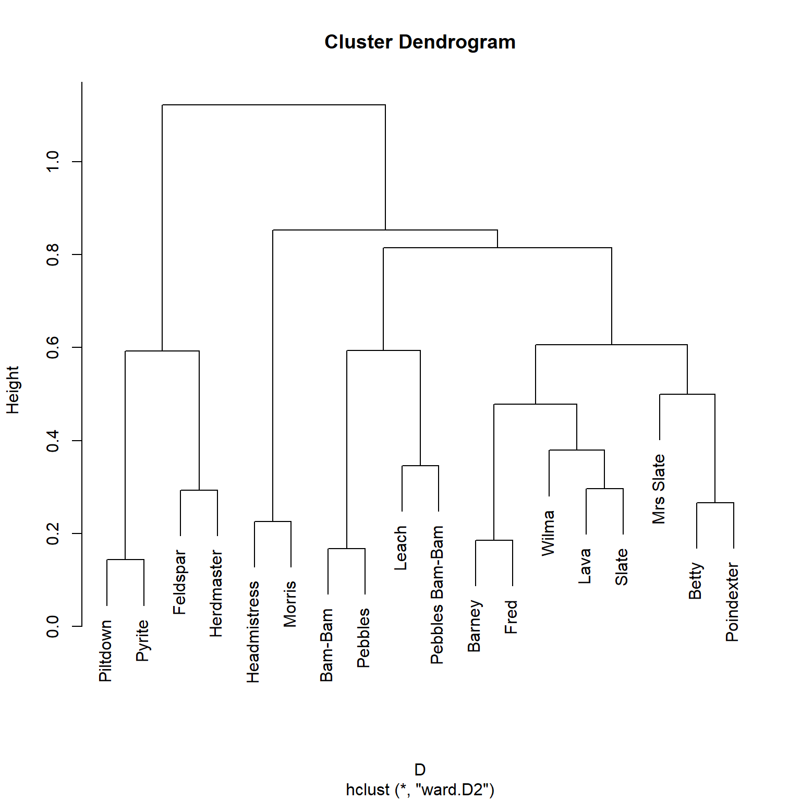

As we noted in the structural equivalence lecture notes, for odd reasons, classical approaches to structural similarity in networks used distance metrics but did not measure similarity directly. More recent approaches from network and information science prefer to define vertex similarity using direct similarity measures based on local structural characteristics, aka node neighborhoods.
Compared to distance, similarity is a less stringent (but also less well-defined mathematically) relation between pairs of nodes in a graph, so it can be easier to work with in most applications.
For instance, similarity is required to be symmetric (\(s_{ij} = s_{ji}\) for all \(i\) and \(j\)) and most metrics have reasonable bounds (e.g., 0 for least similar and 1.0 for maximally similar). Given such a bounded similarity we can get to dissimilarity by subtracting one: \(d_{ij} = 1 - s_{ij}\), although this is not necessarily guaranteed to return a strict distance metric.
Basic Ingredients of Vertex Similarity Metrics
Consider two nodes and the set of nodes that are the immediate neighbors to each. In this case, most vertex similarity measures will make use of three pieces of information:
The number of common neighbors \(p\).
The number of actors \(q\) who are connected to node \(i\) but not to node \(j\).
The number of actors \(r\) who are connected to node \(j\) but not to node \(i\).
In the simplest case of the binary undirected graph then these are given by:
library(networkdata)library(igraph)library(stringr) #using stringr to change names from all caps to title case g <- movie_267V(g)$name <-str_to_title(V(g)$name) g <-delete_vertices(g, degree(g) <=3) #deleting low degree vertices A <-as.matrix(as_adjacency_matrix(g)) A.p <- A %*% A #common neighbors matrix A.q <- A %*% (1- A) #neighbors of i not connected to j A.r <- (1- A) %*% A #neighbors of j not connected to i A.p[1:10, 1:10]
Note that while \(\mathbf{A}(p)\) is necessarily symmetric, neither \(q\) nor \(r\) have to be. Barney has many more neighbors that Bam-Bam is not connected to than vice versa. Also note that the \(\mathbf{A}(r)\) matrix is just the transpose of the \(\mathbf{A}(q)\) matrix \(\left[\mathbf{A}(q)\right]^T\) in the undirected case.
Raw Number of Common Neighbors
The most obvious measure of similarity between two nodes is simply the number of common neighbors (Leicht, Holme, and Newman 2006):
\[
s_{ij}^{CN} = p_{ij}
\]
We have already seen a version of this in the directed case when talking about the HITS algorithm (Kleinberg 1999), which computes a spectral (eigenvector-based) ranking based on the matrices of common in and out-neighbors in a directed graph.
In this case, similarity can be measured either by the number of common in-neighbors or the number of common out-neighbors.
If the network under consideration is a (directed) citation network with nodes being papers and links between papers defined as a citation from paper \(i\) to paper \(j\), then the number of common in-neighbors between two papers is their co-citation similarity (the number of other papers that cite both papers), and the number of common out-neighbors is their bibliographic coupling similarity (the overlap in their list of references).
Similarities Based on the Vertex Degrees
The Preferential Attachment Index
One approach is to count two nodes as similar if they are both connected to lots of other nodes. In terms of the quantities above, this preferential attachment index, proposed by Barabási and Albert (1999) is very simple to compute since it boils down to:
\[
s_{ij}^{PA} = (p + q)(p + r)
\tag{1}\]
Which is the just the products of the degrees of each of the nodes. In terms of the matrices defined earlier, the preferential attachment index can be calculated as follows:
Which shows Barney to be very similar to Betty and Fred as we would expect.
One problem with using unbounded quantities like the sheer number of common of (in or out) neighbors to define node similarity is that they are only limited by the number of nodes in the network (Leicht, Holme, and Newman 2006). Thus, an actor with many neighbors will end up having lots of other neighbors in common with lots of other nodes, which will mean we would count them as “similar” to almost everyone.
Degree-Discounted Common Neighbor Metrics
Adamic-Adar Index
The raw number of common neighbors is a simple and intuitive measure of similarity, but it counts every common neighbor between two nodes as the same in determining the similarity between two nodes.
To deal with this issue, Adamic and Adar (2003) propose a tweak on the raw number of common neighbors measure that is inspired by the PageRank style (see here) degree-weighting approach. The basic idea is to discount a common connection to a high-degree neighbor and count a common connection to a more selective neighbor more in determining the pairwise similarity.
This metric, called the Adamic-Adar index can be computed as follows:
Where \(d_k\) is the degree of common neighbor \(k\). We normalize by the natural logarithm of degree to lower the discount as degree increases.
The Resource Allocation Index
Another approach inspired by the same idea as Adamic and Adar (2003) is that proposed by Zhou, Lü, and Zhang (2009), which is the same as Adamic and Adar (2003) but without using the log to lower the discount for high degree nodes as degree increases:
This is the resource allocation index of Zhou, Lü, and Zhang (2009).
Fullly Normalized Similarity Metrics
Jaccard Index
The most popular version of a normalized vertex similarity scores are the Jaccard index, which is given by:
\[
s_{ij}^J = \frac{p}{p + q + r}
\tag{4}\]
Which is the ratio of the size of the intersection of the neighborhoods of the two nodes (number of common neighbors \(p\)) divided by the size of the union of the two neighborhoods (\(p + q + r\)). When the neighborhoods of the two nodes coincide (e.g., \(q = 0\) and \(r = 0\)) then Equation 4 turns into \(\frac{p}{p} = 1.0\), which is the maximum Jaccard similarity between two nodes.
In our example, we can compute the Jaccard similarity as follows:
Which is the ratio of the number of common neighbors divided by the product of the square root of the degrees of each node (or the square root of the product which is the same thing), since \(p\) + \(q\) is the degree of node \(i\) and \(p\) + \(r\) is the degree of node \(j\).
When the neighborhoods of the two nodes coincide (e.g., \(q = 0\) and \(r = 0\)) then Equation 5 turns into \(\frac{p}{\sqrt{p^2}} = \frac{p}{p} = 1.0\).
In our example, we can compute the Cosine similarity as follows:
Which is given by the ratio of twice the number of common neighbors divided by the sum of the number of total neighbors of the two nodes (hence the number of common neighbors \(p\) shows up twice also in the denominator). When the neighborhoods of the two nodes coincide (e.g., \(q = 0\) and \(r = 0\)) then Equation 6 turns into \(\frac{2p}{2p} = 1.0\).
In our example, we can compute the Dice similarity as follows:
Once again, showing results comparable to the previous.
The Leicht-Holme-Newman Index
Note, that all three of the fully normalized pairwise measures of similarity are bounded between zero and one, with nodes being maximally similar to themselves and with pairs of distinct nodes being maximally similar when they have the same set of neighbors (e.g., they are structurally equivalent).
Leicht, Holme, and Newman (2006) introduce a variation on the theme of normalized structural similarity scores. Their point is that maybe we should care about nodes that are surprisingly similar given some suitable null model. They propose the configuration model as such a null model. This model takes a graph with the same degree distribution as the original but with connections formed at random as reference.
The LHN similarity index (for Leicht, Holme, and Newman) is then given by:
Which can be seen as a variation of the cosine similarity defined earlier. Note that in contrast to the other similarities we have considered which reach a maximum of 1.0 when the two nodes have the same neighborhood (\(q = 0\) and \(r = 0\)) the LHN similarity only reaches that limit for two nodes that are adjacent and don’t have any other neighbors (\(p=1\)).
For nodes with identical neighborhoods, the maximum LHN score will always be \(\frac{p}{p^2} = \frac{1}{p}\) which means that it will decrease as node degree increases, even when the two nodes share the same neighbors. This makes sense, since it is much more “surprising” for two nodes to share neighbors when they only have a few friends than we they have lots of friends.
In our example, we can compute the LHN similarity as follows:
Which, once again, produces similar results to what we found before. Note, however, that the LHN is not naturally maximal for self-similar nodes.
We can package all that we said before into a handy function that takes a graph as input and returns all four fully normalized similarity metrics as output:
vertex.sim <-function(w) { x <-as.matrix(as_adjacency_matrix(w)) p <- x %*% x q <- x %*% (1- x) r <- (1- x) %*% x j <- p / (p + q + r) c <- p / (sqrt(p + q) *sqrt(p + r)) d <- (2* p) / ((2* p) + q + r) l <- p / ((p + q) * (p + r))return(list(J = j, C = c, D = d, L = l)) }
Partially Normalized Similarity Metrics
The fully normalized similarity metrics are designed to mute the influence of with high degree in determining the pairwise similarity of two nodes, because we normalize by some function of both the degrees of the nodes in question.
Hub Promoted Index
Sometimes, however, we may actually want to magnify the influence of high-degree nodes in determining the pairwise similarity. One approach due to Ravasz et al. (2002), is to normalize by the minimum of the two degrees. This is called the hub promoted index and is given by:
Here, two nodes are maximally similar when the neighborhood of the smaller node is fully included in the neighborhood of the bigger node (\(p = min\left[(p + q), (p + r)\right]\)). This approach thus “promotes” high degree nodes by making them more similar to low degree nodes.
Hub Depressed Index
We can, of course, follow the reverse approach and suppress the influence of high-degree nodes and count nodes as similar only when their degrees are also similar. This is the hub depressed index also proposed by Ravasz et al. (2002), and is computed as follows:
Here by dividing by the maximum, pairings of high degree and low degree nodes are not counted as similar, while pairings of similar-degree nodes are.
Similarity and Structural Equivalence
All normalized similarity measures bounded between zero and one (like Jaccard, Cosine, and Dice) also define a distance on each pair of nodes which is equal to one minus the similarity. So the cosine distance between two nodes is one minus the cosine similarity, and so on for the Jaccard and Dice indexes.1
Because they define distances, this also means that these approaches can be used to find approximately structurally equivalent classes of nodes in a graph just like we did with the Euclidean and correlation distances.
For instance, consider our toy graph from our previous discussion showcasing four structurally equivalent sets of nodes:

A toy graph demonstrating structural equivalence.
The cosine similarity matrix for this graph is:
W <-as.matrix(as_adjacency_matrix(h)) W.p <- W %*% W W.q <- W %*% (1- W) W.r <- (1- W) %*% W C <- W.p / (sqrt(W.p + W.q) *sqrt(W.p + W.r))round(C, 2)
A B C D E F G H I
A 1.00 0.26 0.26 0.58 0.58 0.58 0.67 0.00 0.00
B 0.26 1.00 1.00 0.00 0.00 0.00 0.26 0.67 0.67
C 0.26 1.00 1.00 0.00 0.00 0.00 0.26 0.67 0.67
D 0.58 0.00 0.00 1.00 1.00 1.00 0.58 0.25 0.25
E 0.58 0.00 0.00 1.00 1.00 1.00 0.58 0.25 0.25
F 0.58 0.00 0.00 1.00 1.00 1.00 0.58 0.25 0.25
G 0.67 0.26 0.26 0.58 0.58 0.58 1.00 0.00 0.00
H 0.00 0.67 0.67 0.25 0.25 0.25 0.00 1.00 0.75
I 0.00 0.67 0.67 0.25 0.25 0.25 0.00 0.75 1.00
Note that structurally equivalent nodes have similarity scores equal to 1.0. In this case, the distance matrix is given by:
D <-1- Cround(D, 2)
A B C D E F G H I
A 0.00 0.74 0.74 0.42 0.42 0.42 0.33 1.00 1.00
B 0.74 0.00 0.00 1.00 1.00 1.00 0.74 0.33 0.33
C 0.74 0.00 0.00 1.00 1.00 1.00 0.74 0.33 0.33
D 0.42 1.00 1.00 0.00 0.00 0.00 0.42 0.75 0.75
E 0.42 1.00 1.00 0.00 0.00 0.00 0.42 0.75 0.75
F 0.42 1.00 1.00 0.00 0.00 0.00 0.42 0.75 0.75
G 0.33 0.74 0.74 0.42 0.42 0.42 0.00 1.00 1.00
H 1.00 0.33 0.33 0.75 0.75 0.75 1.00 0.00 0.25
I 1.00 0.33 0.33 0.75 0.75 0.75 1.00 0.25 0.00
And a hierarchical clustering on this matrix reveals the structurally equivalent classes:
D <-as.dist(D) h.res <-hclust(D, method ="ward.D2")plot(h.res)

In the Flintstones network, we could then find structurally equivalent blocks from the similarity analysis as follows (using Cosine):
D <-as.dist(1-vertex.sim(g)$C) h.res <-hclust(D, method ="ward.D2") #hierarchical clustering
We can then plot the resulting clusters into a dendrogram:
plot(h.res)

Which reveals four major blocks of structurally similar actors.
We can then extract our blocks just like we did with the Euclidean distance hierarchical clustering results in our discussion of structural equivalence:
blocks <-cutree(h.res, k =4) #requesting four blocks blocks
This analysis puts \(\{\) Barney, Betty, Fred, Lava, Mrs. Slate, Slate, Wilma \(\}\) in the second block of equivalent actors (shown as the right-most cluster in the dendrogram). Which seems about right!
Local Vertex Similarities in Directed Graphs
As we have seen before when considering directed graphs, everything doubles. The same goes for vertex similarity measures.
The basic problem is that when determining wether two vertices are similar or not in a directed graph, we need to choose between considering them similar if they have a lot of common in-neighbors (also referred to as co-citation in the information science literature) or whether they have lots of common out-neighbors (also referred to as coupling in the information science literature). This means that we will have a co-citation and a coupling version of each of the measures considered above.
A solution to this issue is due to Amsler (1972), who suggested that we combine both pieces of information in a generalized as follows:
Where \(cc_{ij}\) is the co-citation similarity between \(i\) and \(j\), \(co_{ij}\) is the coupling similarity, and \(\lambda\) is a researcher chosen parameter with the restriction \(0 \geq \lambda \leq 1\). When \(\lambda = 0\) the similarity is driven only by co-citation, when \(\lambda = 1\) the similarity is driven only by coupling, and when \(\lambda = 0.5\) it is equally shared between the two.
References
Adamic, Lada A, and Eytan Adar. 2003. “Friends and Neighbors on the Web.”Social Networks 25 (3): 211–30.
Amsler, Robert A. 1972. “Applications of Citation-Based Automatic Classification.” University of Texas at Austin.
Barabási, Albert-László, and Réka Albert. 1999. “Emergence of Scaling in Random Networks.”Science 286 (5439): 509–12.
Kleinberg, Jon M. 1999. “Authoritative Sources in a Hyperlinked Environment.”Journal of the ACM (JACM) 46 (5): 604–32.
Leicht, Elizabeth A, Petter Holme, and Mark EJ Newman. 2006. “Vertex Similarity in Networks.”Physical Review E—Statistical, Nonlinear, and Soft Matter Physics 73 (2): 026120.
Ravasz, Erzsébet, Anna Lisa Somera, Dale A Mongru, Zoltán N Oltvai, and A-L Barabási. 2002. “Hierarchical Organization of Modularity in Metabolic Networks.”Science 297 (5586): 1551–55.
Zhou, Tao, Linyuan Lü, and Yi-Cheng Zhang. 2009. “Predicting Missing Links via Local Information.”The European Physical Journal B 71 (4): 623–30.
Footnotes
Note that for a measure to count as a true metric distance, the triangle inequality must be respected (e.g., \(d(x,z) \leq d(x,y) + d(z,y)\)). This is the case for the complement of the Jaccard and the Cosine similarities.↩︎